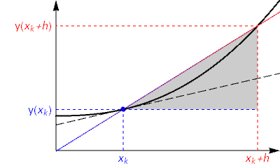

1. Introduction to finite differences¶
1.1. Refresher on finite Taylor series¶
Feel free to skip this section if you feel comfortable with these concepts.
Big idea : Local approximation of a function
We can compute a series expansion for a function in powers of \(x\) using Taylor series. The resulting truncated polynomial gives a good local approximation to a function in a sense made precise by the Lagrange remainder theorem. If the truncated polynomial is used near the expansion point \(a\) then its accuracy “goes like” the \(n^{\text{th}}\) power of the distance from \(a\).
1.2. Taylor expansion definition¶
We will write the formula for expansion about \(x=a\), in which we seek to express \(f(x)\) as an infinite polynomial of the form
We choose the coefficients \(c_n\) to ensure that the \(n^{\text{th}}\) derivative of the polynomial is equal to the \(n^{\text{th}}\) derivative of the function at the point \(x=a\). In this sense, the Taylor series gives the best possible local polynomial approximation to \(f(x)\) of specified degree. By repeatedly differentiating and evaluating the polynomial, we obtain
This result defines the Taylor series for \(f(x)\), given in the box below.
``{admonition} Taylor series for \(f(x)\) about a point \(x=a\).
The special case when \(a=0\) is known as the Maclaurin series for historical reasons. ``
A disclaimer!
Not all functions are faithfully represented by their Taylor Series. We have only guaranteed that the polynomial has the “correct” behaviour in the immediate vicinity of the point \(x=a\). Two things should be checked:
Does the series converge to a finite value for all \(x\)?
We can find the radius of convergence by using the ratio testDoes it converge to \(f(x)\)?
We must show that \(\displaystyle \lim_{k\rightarrow \infty}|f(x)-p_k(x;a)|=0\), which may only be true for some values of \(x\). This can be done by making use of the Lagrange remainder theorem, introduced in the next subsection.
Functions which converge to their Taylor series are called analytic, and functions which converge to their Taylor series everywhere are called entire. The sine and cosine series, and the \(e^x\) series are entire. The Maclaurin series for \(\ln(1+x)\) is analytic for \(|x|<1\).
1.3. Practical use¶
The Taylor series nearly always contains an infinite number of terms. To be of practical use in numeric applications, we need to “truncate” the expansion, meaning that we retain only the terms up to a specified \(n^{\text{th}}\) power of \(x\). As well as considering the validity of the infinite series, it is important to be able to determine how many terms in the series are needed for practical use. If the series converges very slowly, then it may not be much good!
The Lagrange remainder theorem, given in the box below, allows us to place precise bounds on the size of the error. The result shows that the error in the truncated expansion is proportional to the next power of \((x-a)\).
Lagrange remainder theorem
Let \(p_n(x;a)\) be the truncated Taylor expansion of \(f(x)\) about point \(x=a\), up to and including the term in \((x-a)^n\).
The remainder (error) in the truncated expansion is given by:
We say that the degree \(n\) series has “order \((x-a)^n\) accuracy”, and we may write
where the big-O notation describes the order of the error terms.
The power-relationship in Lagrange’s theorem can be anticipated when \((x-a)\) is small, and for larger differences by noting that factorial growth (of the coefficient denominators) is much faster than algebraic (polynomial) growth. The proof, and derivation of the coefficient of \((x-a)^n\) is found by using the mean value theorem. It won’t be of much benefit for our practical purposes to show the proof here, but I’m happy to provide it if you want to see it. Instead, let us take a look at an illustrative example.
1.3.1. Example¶
Use the Lagrange remainder theorem to compute an upper bound for the size of the error in the quadratic expansion of \(\sin(x)\) about \(x=\frac{\pi}{3}\), at a nearby point \(x=\frac{\pi}{2}\).
1.3.2. Solution¶
The series expansion is found to be:
And from Lagrange’s formula, the error in the expansion at \(x=\frac{\pi}{2}\) is given by:
Since \(|\cos(\xi)|\) is bounded above by \(1\) on the given domain, Lagrange’s remainder theorem gives an upper bound of \(\frac{\pi^3}{6^4}=0.0239246\)
The exact error is
1.4. Finite derivative formulae¶
Big idea : Local approximation of derivatives
We can truncate and manipulate Taylor’s series to obtain algebraic approximation for first and second (and higher) derivatives involving weighted averages of neighbouring points.
1.4.1. Forward difference approximation¶
Discarding all terms of degree greater than one in Taylor’s formula for expansion about \(x=x_k\) gives:
This approximation is good if \(|x-x_k|\ll 1\), where the notation \(\ll\) means “much less”. If we label \(h=(x-x_k)\), then we may rewrite the expression as shown in the box below. The result is known as Euler’s forward difference formula or the explicit Euler method.
Euler’s forward difference formula
A simple rearrangement of Euler’s forward difference formula gives the following expression for the derivative at \(x_k\).
This result, which is illustrated graphically below, is familiar from our early work on calculus. The derivative is formally defined as the limiting case where \(h\rightarrow 0\). However, we will treat \(h\) as a small-but-finite quantity, which introduces an order \(h\) truncation error. We say that the result is zeroth order accurate. Some applications of this approximation are given in the next sections of the notes.
{kind=link}
There are other finite difference formulas that can be obtained from Taylor’s series, by taking weighted sums of expansions about different points to eliminate unwanted terms in the series. Some of them are favoured because they exhibit higher order accuracy than Euler’s formula, whilst others may be favoured in practical applications for their numeric stability, computational efficiency or ease of practical implementation. A few examples of finite difference formulas are given below, though this list is far from exhaustive.
You may notice that the forward, backward and central differences formulae are simply grid-shifted versions of each other. However, this property does not extend to other finite difference formulae.
1.4.2. First derivative formulae¶
Forward difference (order \(h\) accuracy) :
The result is obtained by expanding taking \(x=(x_k+h)\), \(a=x_k\) in the Taylor expansion
Backward difference (order \(h\) accuracy) :
The result is obtained by expanding taking \(x=x_k\), \(a=(x_k+h)\) in the Taylor expansion
Central difference (order \(h^2\) accuracy):
or (by replacing \(h\) with \(h/2\)) $\(\phantom{[1]-[2] \Rightarrow}\quad \displaystyle y^{\prime}_{k} = \frac{y_{k+1/2}-y_{k-1/2}}{h}+\frac{h^2}{4}\left[-\frac{2}{3}y^{\prime\prime}_k+\dots\right] \qquad \text{where } y_{k\pm1/2}=y(x_k\pm h/2)\)$
1.4.3. Second derivative formulae¶
Forward difference :
Central difference :
1.4.4. Discussion¶
Euler’s formula is rarely used in problems of real practical importance, as it often requires impractically small integration steps to achieve the required accuracy goal. However, it does appear as a sub-step in some other important formulas that we will encounter in the section on multistep methods.
The central difference formulas are of particular importance. They are very heavily used in numeric methods because they achieve a good balance between simplicity, stability and accuracy. The central difference formulas estimate the slope at each point by using a weighted combination of points on each side. The graphic below provides an indication of why this usually gives a better estimate. The sketch indicates that the slope of the secant line between adjacent coordinates gives a better approximation to the gradient at the midpoint of the interval than at either of the endpoints.
{kind=link}
Hand derivation exercise:
The given results for the first derivative all require only two points to calculate. Can you derive a result from the Taylor series that uses three points \([y_k,y_{k+1},y_{k+2}]\) to calculate an estimate of the first derivative \(y^{\prime}(x_k)\) that gives quadratic order accuracy?
Hint
Start by expanding \(y(x_k+2h)\) and \(y(x_{k+h})\) and use a weighted combination of these two expansions that eliminates the second derivative terms.